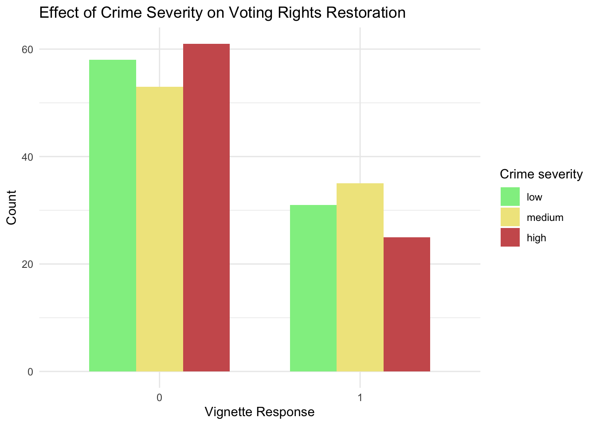
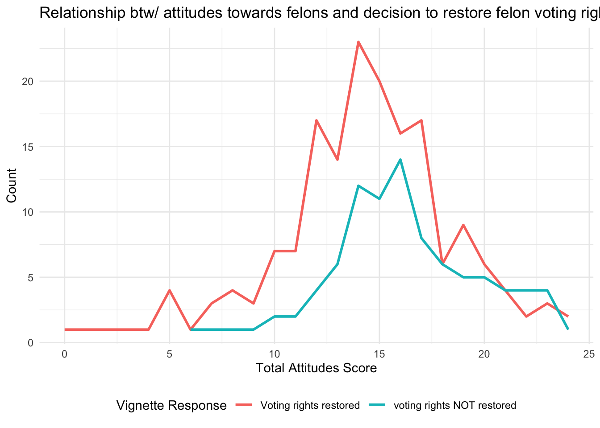
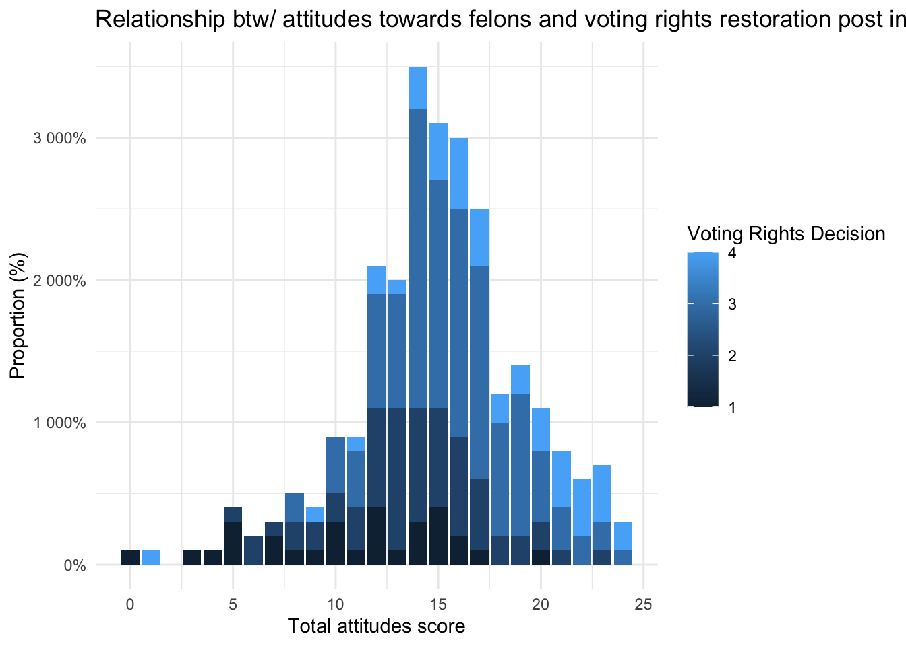
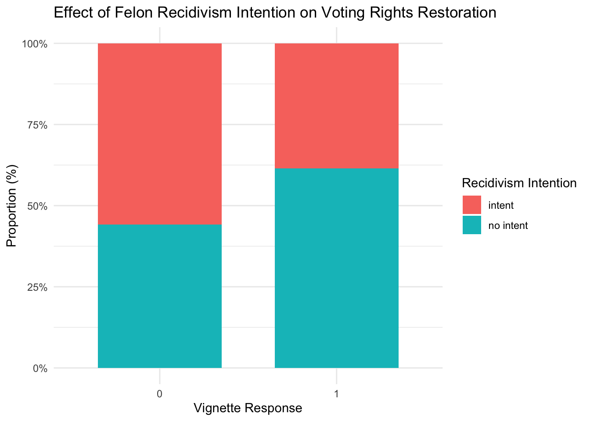

# library(ggpubr)
# library(naniar)
library(tidyr)
library(haven)
library(tidyverse)
library(explore)
library(haven) #for loading other datafiles (SAS, STATA, SPSS, etc.)
library(stringr)
library(ggpubr)
knitr::opts_chunk$set(echo = TRUE, warning=FALSE, message=FALSE)YOUR PROJECT TITLE
602 (Fall 2023)
Project Description
survey.data <- read_csv("/Users/kaiholl/Documents/GitHub/dacss602final/survey_data_v2.csv")
# renaming columns to make referencing them easier
# --------------------------------
oldnames = c("...1","(att)g4q1_1_honest living","(att)g4q1_2_next door","(att)g4q1_3_rehabilitate","(att)g4q1_4_productivelives","(att)g4q1_5_immoral","(att)g4q1_6_circumstance","(att)g4q1_7_trust","(att)g4q1_8_guard","(att)g4q1_9_parole","(control)g4q2_felonsvote","g4q3_white_lowc_noitd","g4q4_nowhite_lowc_noitd","g4q5_white_medc_noitd","g4q6_nowhite_medc_noitd","g4q7_white_highc_noitd","g4q8_nowhite_highc_noitd","g4q9_white_lowc_itd","g4q10_nowhite_lowc_itd","g4q11_white_medc_itd","g4q12_nowhite_medc_itd","g4q13_white_highc_itd","g4q14_nowhite_highc_itd","g4jail1_youincar","g4jail2_famfrdincar")
newnames = c("respondent","honest.living","next.door","rehab","productive","immoral","circumstance","trust","guard","parole","vote.info","white.low.nor","non.low.nor","white.med.nor","non.med.nor","white.high.nor","non.high.nor","white.low.r","non.low.r","white.med.r","non.med.r","white.high.r","non.high.r","you.jail","famfrd.jail")
# Info on Column Names
# --------------------------------
# ATTITUDES SCALE - full Questions
# honest.living = Most felons are too lazy to earn an honest living. **(REVERSE SCORED)**
# next.door = I wouldn’t mind living next door to an ex-felon.
# rehab = Trying to rehabilitate felons is a waste of time and money. **(REVERSE SCORED)**
# productive = Given the right conditions, felons can lead productive lives and become law-abiding citizens.
# immoral = Felons are just plain immoral. **(REVERSE SCORED)**
# circumstance = Felons are victims of circumstance and deserve to be helped.
# trust = It is wise to trust a felon.
# guard = You have to be constantly on your guard with felons. **(REVERSE SCORED)**
# parole = If a person does well in prison, he/she should be let out on parole.
# VIGNETTES
# white = white felon
# non = non-white felon
# low = low crime severity, tax fraud
# med = medium crime severity, armed robbery
# high = high crime severity, sexual offense against a child
# nor = no intention to recidivate, ie. do not intend to recommit crimes once out of prison
# r = intention to recidiviate, ie. do intend to recommit crimes once out of prison
# Recoding Attitude Responses to Numeric
# --------------------------------
survey.data <- survey.data %>%
select(-c(DistributionChannel, Consent)) %>% # removing some unnecessary columns
rename_at(vars(oldnames), ~ newnames) %>%
mutate(across(c("next.door","productive","circumstance","trust","parole","vote.info"), # normal worded positive scale items plus vote.info variable
~case_when(
grepl("Strongly disagree", .) ~ 1,
grepl("Disagree", .) ~ 2,
grepl("Agree", .) ~ 3,
grepl("Strongly agree", .) ~ 4))) %>%
mutate(across(c("honest.living","rehab","immoral","guard"), # recoding reverse worded survey items
~case_when(
grepl("Strongly disagree", .) ~ 4,
grepl("Disagree", .) ~ 3,
grepl("Agree", .) ~ 2,
grepl("Strongly agree", .) ~ 1)))
# Tabulating a Total Attitudes Score for Each Respondent
# --------------------------------
survey.data <- survey.data %>%
mutate(attitudes = rowSums(.[3:11]) - 9, .after = "parole")
# 0 = most negative attitudes towards felons possible
# 27 = most positive attitudes towards felons possible
# Creating Summary df
# --------------------------------
vignettes <- survey.data %>%
select(14:25)
respondent.df <- survey.data %>%
mutate(v.condition = names(vignettes)[max.col(!is.na(vignettes))], .after = "non.high.r") %>%
mutate(felon.race = case_when(
str_detect(v.condition, "white") ~ "white",
str_detect(v.condition, "non") ~ "non-white"), .after = "v.condition") %>%
mutate(crime.sev = case_when(
str_detect(v.condition, "low") ~ "low",
str_detect(v.condition, "med") ~ "medium",
str_detect(v.condition, "high") ~ "high"), .after = "felon.race") %>%
mutate(recidivism = case_when(
str_detect(v.condition, "nor") ~ "no intent",
str_detect(v.condition, "r") ~ "intent"), .after = "crime.sev") %>%
mutate(v.response = coalesce(white.low.nor,non.low.nor,white.med.nor,non.med.nor,white.high.nor,non.high.nor, # v.response = survey participant's response to vignette
white.low.r,non.low.r,white.med.r,non.med.r,white.high.r,non.high.r), .after = "recidivism") %>%
select(-14:-25, -v.condition)Descriptive Summary
# turning variables into factor variable
# --------------------------------
respondent.df$crime.sev <- factor(respondent.df$crime.sev, levels = c("low", "medium", "high"))
respondent.df$v.response <- as.factor(respondent.df$v.response)
# example
library(psych) # Use any package you'd like to use!
names(iris) # names(DATAFRAME)[1] "Sepal.Length" "Sepal.Width" "Petal.Length" "Petal.Width" "Species" describe(iris) # describe(DATAFRAME) vars n mean sd median trimmed mad min max range skew
Sepal.Length 1 150 5.84 0.83 5.80 5.81 1.04 4.3 7.9 3.6 0.31
Sepal.Width 2 150 3.06 0.44 3.00 3.04 0.44 2.0 4.4 2.4 0.31
Petal.Length 3 150 3.76 1.77 4.35 3.76 1.85 1.0 6.9 5.9 -0.27
Petal.Width 4 150 1.20 0.76 1.30 1.18 1.04 0.1 2.5 2.4 -0.10
Species* 5 150 2.00 0.82 2.00 2.00 1.48 1.0 3.0 2.0 0.00
kurtosis se
Sepal.Length -0.61 0.07
Sepal.Width 0.14 0.04
Petal.Length -1.42 0.14
Petal.Width -1.36 0.06
Species* -1.52 0.07Findings
# What variables do we want to compare to each other to see if there is a relationship?
# Attitudes vs. Vignette Response:
# How does a respondent’s attitudes towards felons correlate with their response to their vignette?
# Does the type of vignette (race, crime severity, recidivism intention) impact the strength of this relationship? For instance, are respondents with more negative attitudes more likely to not restore voting rights when they receive a vignette of a felon who intends to recidivate?
# Attitudes vs. Information Influence
# Since both of these variables presumably measure a respondent’s attitudes towards felons, we should expect a respondent’s answers to both to be relatively similar
# Does the knowledge of current voting rights laws across America and the fact that recidivism rates are high in America result in a respondent changing their attitudes (ie compare score from first attitudes scale to response to information influence item)
# Race of felon vs. Vignette Response
# Does the fact that the felon is White or Black impact the likelihood of a respondent believing that voting rights should be restored to the felon?
# Does the crime severity or recidivism intention moderate this relationship?
# Crime Severity vs. Vignette Response
# Same as C
# Recidivism Intention vs. Vignette Response
# Same as C
# --------------------------------
# Determine whether variables are normally distributed and have homogeneity of variance
# --------------------------------
# IV. Which statistical tests should we use to compare these variables to each other?
# Attitudes vs. Vignette Response
# --------------------------------
# respondent.df %>%
# cor.test(attitudes, )
# att.v <- lm(attitudes ~ v.response, respondent.df)
# summary(att.v)
respondent.df <- respondent.df %>%
mutate(v.response = case_when(
v.response == "No" ~ "0",
v.response == "Yes" ~ "1"))
# cor.test(respondent.df$v.response, respondent.df$attitudes, method = c("spearman"))
# Attitudes vs. Information Influence
# --------------------------------
# attitudes and information influence are both qualitative ordinal variables, so Kendall's T is used.
# WHAT ARE TIES???
cor.test(respondent.df$attitudes, respondent.df$vote.info, method = c("kendall"))
Kendall's rank correlation tau
data: respondent.df$attitudes and respondent.df$vote.info
z = 7.1062, p-value = 1.193e-12
alternative hypothesis: true tau is not equal to 0
sample estimates:
tau
0.3455909 # p-value < 0.05
# tau = 0.3455909, moderate positive agreement
# Race of felon vs. Vignette Response
# --------------------------------
# Crime Severity vs. Vignette Response
# --------------------------------
cri.v <- aov(v.response ~ crime.sev, respondent.df)
summary(cri.v) Df Sum Sq Mean Sq F value Pr(>F)
crime.sev 2 0.50 0.2495 1.099 0.335
Residuals 260 59.01 0.2270 # Recidivism Intention vs. Vignette Response
# --------------------------------
# https://statsandr.com/blog/pearson-spearman-kendall-correlation-by-hand/
# https://ademos.people.uic.edu/Chapter22.html#23_kendall_correlation
# Pearson: used for two quantitative continuous variables which have a linear relationship
# As stated above, Pearson only works with linear data. That means that your two correlated factors have to approximate a line, and not a curved or parabolic shape. It’s not that you can’t use pearson to see if there is a linear relationship in data, it’s just that there are other tests suited to analyzing those different data structures.
# https://feliperego.github.io/blog/2015/10/23/Interpreting-Model-Output-In-R
# Spearman, used for two quantitative variables if the link is partially linear, or for one qualitative ordinal variable and one quantitative variable.
# Kendall, often used for two qualitative ordinal variables.
# Strong positive agreement between the ranks when tau > 0.45
# Moderate positive agreement between the ranks when tau > 0.27
# Weak positive agreement between the ranks when tau is > 0.09
# Use negative values and less-than signs for negative correlations.# example.aov <- aov(len ~ supp + dose, data = my_data)
# summary(example.aov)
#
# # or
# example.aov2 <- aov(len ~ supp * dose, data = my_data)
# summary(example.aov2)# https://www.r-bloggers.com/2021/08/how-to-plot-categorical-data-in-r-quick-guide/#:~:text=A%20useful%20technique%20to%20show,is%20to%20use%20grouped%20boxplots.&text=The%20teams%20are%20represented%20on,represented%20on%20the%20y%2Daxis
# https://rkabacoff.github.io/datavis/Bivariate.html
# Relationship between Race of Felon and Vignette Respone
# --------------------------------
table(respondent.df$felon.race, respondent.df$v.response)
0 1
non-white 86 48
white 86 43# non-white: no = 86, yes = 48
# white: no = 86, yes = 43
# Relationship between Crime Severity and Vignette Respone
# --------------------------------
table(respondent.df$crime.sev, respondent.df$v.response)
0 1
low 58 31
medium 53 35
high 61 25# No:
# low = 58
# medium = 53
# high = 61
# Yes:
# low = 31
# medium = 35
# high = 25
respondent.df %>%
ggplot(aes(v.response, fill = crime.sev)) +
geom_bar(position = position_dodge(preserve = "single"), width = 0.7) +
scale_fill_manual(name = "Crime severity", values = c("lightgreen", "khaki", "indianred")) +
theme_minimal() +
labs(x = "Vignette Response", y="Count", title = "Effect of Crime Severity on Voting Rights Restoration")
# The majority of respondents said No to restoring voting rights to the felon.
# Respondents were marginally more likely to restore voting rights to a felon with a medium crime severity than a low or high crime severity **NEED TO CHECK SIGNIFICANCE**
# Relationship between Attitudes and Vignette Response
# --------------------------------
# respondent.df %>%
# ggplot(aes(v.response, attitudes)) +
# geom_boxplot(fill='lightskyblue') +
# theme_minimal() +
# labs(x = "Vignette Response", y="Total Attitudes Score", title = "Relationship between Attitudes and Vignette Response")
respondent.df %>%
group_by(v.response) %>%
count(attitudes) %>%
ggplot(aes(attitudes, n, colour = v.response, group = v.response)) +
geom_line(lwd = 1) +
theme_minimal() +
theme(legend.position = 'bottom') +
scale_colour_hue(labels=c("Voting rights restored", "voting rights NOT restored")) +
labs(x = "Total Attitudes Score", y = "Count", colour = "Vignette Response", title = "Relationship btw/ attitudes towards felons and decision to restore felon voting rights")
# Attitudes vs. Information Influence
# --------------------------------
# respondent.df$attitudes <- as.factor(respondent.df$attitudes)
# respondent.df$vote.info <- as.factor(respondent.df$vote.info)
respondent.df %>%
group_by(vote.info) %>%
count(attitudes) %>%
ggplot(aes(attitudes, n, fill = vote.info)) +
geom_bar(stat = "identity") +
theme_minimal() +
scale_y_continuous(labels = scales::percent_format(accurary = 1)) +
labs(x = "Total attitudes score", y="Proportion (%)", title = "Relationship btw/ attitudes towards felons and voting rights restoration post information", fill = "Voting Rights Decision")
# Relationship between Recidivism Intention and Vignette Response
# --------------------------------
respondent.df %>%
ggplot(aes(v.response, fill=recidivism)) +
geom_bar(position="fill", width = 0.7) +
theme_minimal() +
scale_y_continuous(labels = scales::percent_format(accurary = 1)) +
labs(x = "Vignette Response", y="Proportion (%)", title = "Effect of Felon Recidivism Intention on Voting Rights Restoration", fill = "Recidivism Intention")
# plot shows that when shown a vignette of a felon who intends to recommit the crime once released from prison, independent of the severity of the crime committed or the race of the felon, respondents are more likely to not restore rights to the felon compared to respondents who received vignettes of felons who did NOT intend to recidivise.
# plot tooth length ("len") by groups ("dose")
# color box plot by a second group: "supp"
# add error bars: mean_se
#
# # Line plots with multiple groups
# # plot tooth length ("len") by groups ("dose")
# # color box plot by a second group: "supp"
# # add error bars: mean_se
# library(ggpubr)
# ggline(my_data, x = "dose", y = "len", color = "supp",
# add = c("mean_se", "dotplot"),
# palette = c("#00AFBB", "#E7B800"))
#
# # OR
# # using R base graphs:
# boxplot(len ~ supp * dose, data = my_data, frame = FALSE,
# col = c("#00AFBB", "#E7B800"), ylab = "Tooth Length")
#
# # Another example: Two-way interaction plot
# interaction.plot(x.factor = my_data$dose, trace.factor = my_data$supp,
# # x.factor: the factor to be plotted on x axis
# # trace.factor: the factor to be plotted as lines
# # response: a numeric variable giving the response
# response = my_data$len, fun = mean,
# # type: the type of plot (p: point, l: line, b: both point and line)
# type = "b", legend = TRUE,
# xlab = "Dose", ylab = "Tooth Length",
# pch = c(1, 19), col = c("#00AFBB", "#E7B800"))